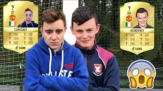

I have always been very intrigued in film making / editing and just the whole process that goes into making a high quality video. One of my biggest inspirations has to be Casey Neistat. He is a you tuber who started from nothing but used his love for film making to make amazing and really creative videos that went bigger than he could ever have imagined. I love his transitions, cinematics and his general style and I always watch his videos for inspiration on my own work.
In the past I have had two youtube channels one which I still ]# ]uon. these channel were made so I could learn to feos at a young age and afterwards I would have somehwere to show off my work. some of the videos were pretty cringey but now that I am in college im delighted I did videos as it has given me a headstart over people as I have been editintg videos, using photoshop and recording videos for years. my first channel was called sports and gamer guy and here is a look at one thumbnail.. Then I also made a new channel documenting my progres in the gym and my journey to look better. these videos really shows off my true creative passion